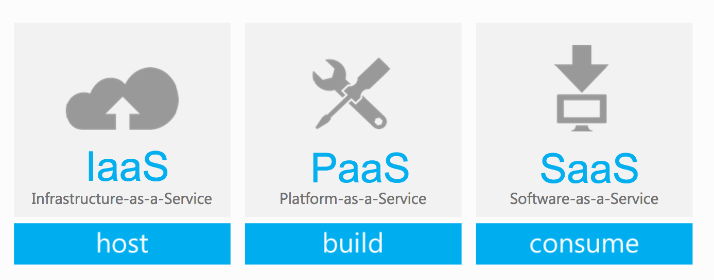

Público
Los proveedores de este modelo venden sus servicio a todas las personas, cualquiera tiene acceso así que ocupan centros de almacenamiento en la nube bastante grandes ya que suelen ser de acceso masivo (Samuel, 2018).
Cloud computing es un modelo que permite un acceso conveniente bajo demanda por medio de la red a varios recursos de computación como lo son los servidores, el almacenamiento y las aplicaciones web (Beal, 2020). Todos estos servicios se pueden ofrecer con poco o ningún manejo de un servidor común.
Algunas de las características principales son:
El cloud computing puede ser dividido según sus modelos de despliegue, los cuales determinan la población meta de una nube. estos modelos son los siguientes:

Los proveedores de este modelo venden sus servicio a todas las personas, cualquiera tiene acceso así que ocupan centros de almacenamiento en la nube bastante grandes ya que suelen ser de acceso masivo (Samuel, 2018).
Es un ambiente de trabajo en la nube privado para una organización en específico.Muchas empresas optan por tener una nube privada para así proteger sus productos. Para obtener este entorno privado el vendedor público asegura algunos recursos de su servios que serán exclusivos para esa organización (Samuel, 2018).
Como su nombre lo dice posee una parte de la nube pública y privada. Es usado por organizaciones que deseen contener información privada pero deben compartir una parte de esta (Samuel, 2018).
Los servicios en la nube son creados con base en los requerimientos de los clientes y los más necesitados son los conocidos como Software a Service (Saas), Platform as a Service (PaaS) y Infraestructure as a Service (IaaS) los cuales se explican a continuación:
En el momento en que se va a elegir un proveedor de servicios de Cloud Computing se debe tomar en cuenta aspectos como zonas en las que está disponible, precio, servidores virtuales y formas de almacenamiento. A continuación se presentará una comparativa de los tres principales proveedores de Cloud Computing: AWS (Amazon Web Services), Microsoft Azure y GCP (Google Cloud Platform), tomando en cuenta algunos de los aspectos anteriormente mencionados, así como ventajas, desventajas y posicionamiento en el mercado (Simplilearn, 2019).
| Consideraciones | AWS | Azure | GCP |
|---|---|---|---|
| Funcionalidad | Crear y desplegar cualquier aplicación en la nube simplemente teniendo acceso a internet. | Permite crear, manejar y desplegar aplicaciones en un network con la ayuda de herramientas y frameworks. | Ofrece a sus usuarios la oportunidad de desarrollar e integrar aplicaciones. |
| Precios | $0.123 - $0.551 | $0.097 - $0.572 | $0.128 - $0.864 |
| Posicionamiento en el mercado | Netflix, Unilever, Kellogg’s | Pixar, Samsung, Ebay | Spotify, HSBC, Snapchat |
| Ventajas |
|
|
|
| Desventajas |
|
|
|